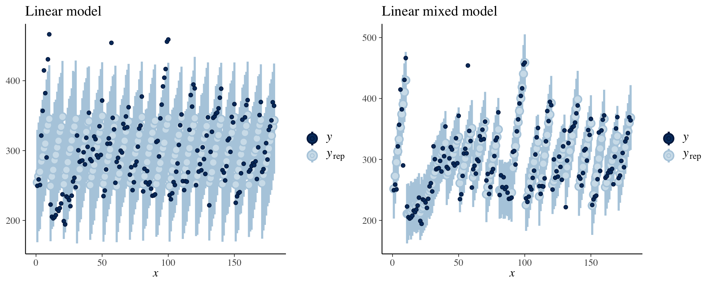
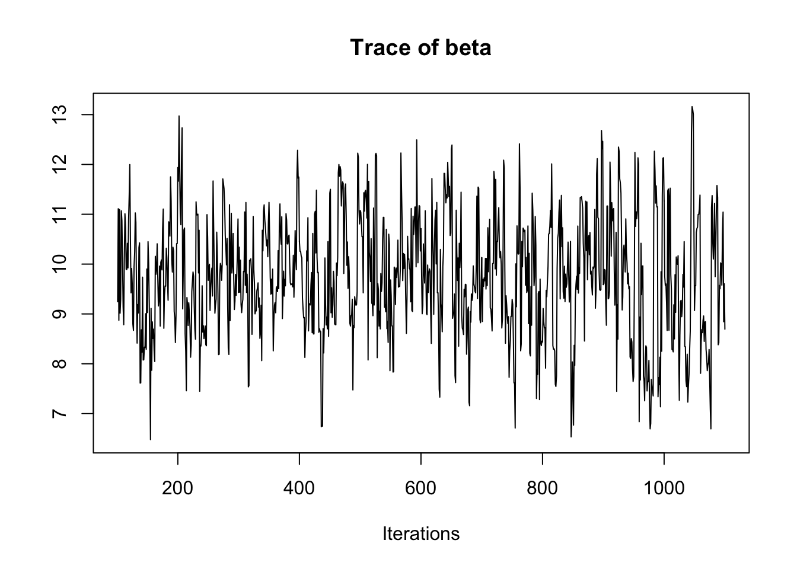
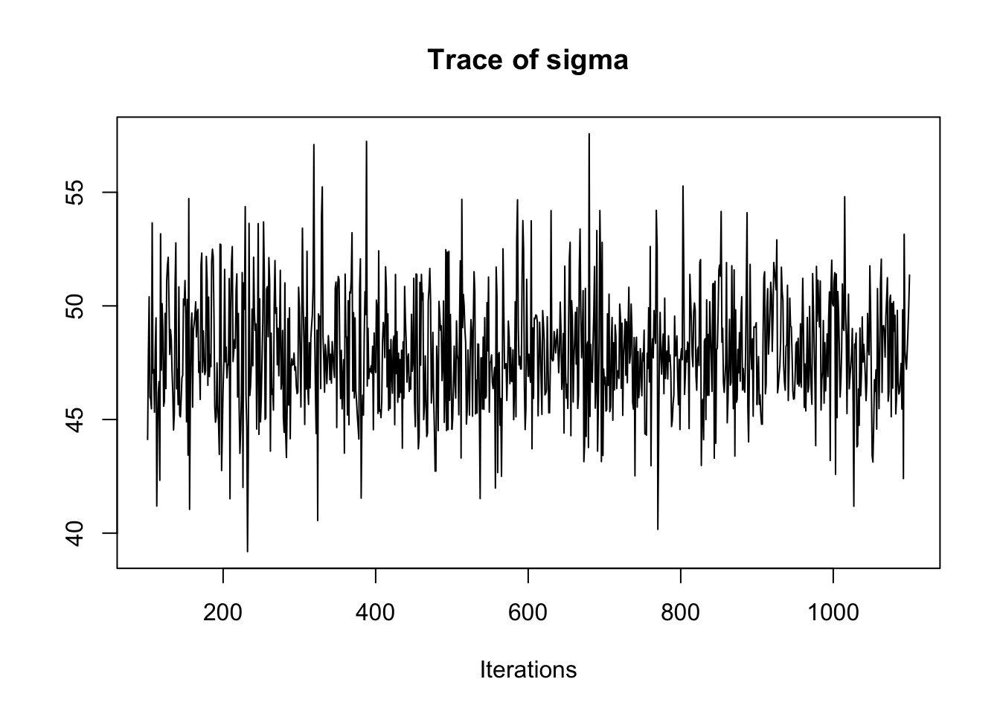
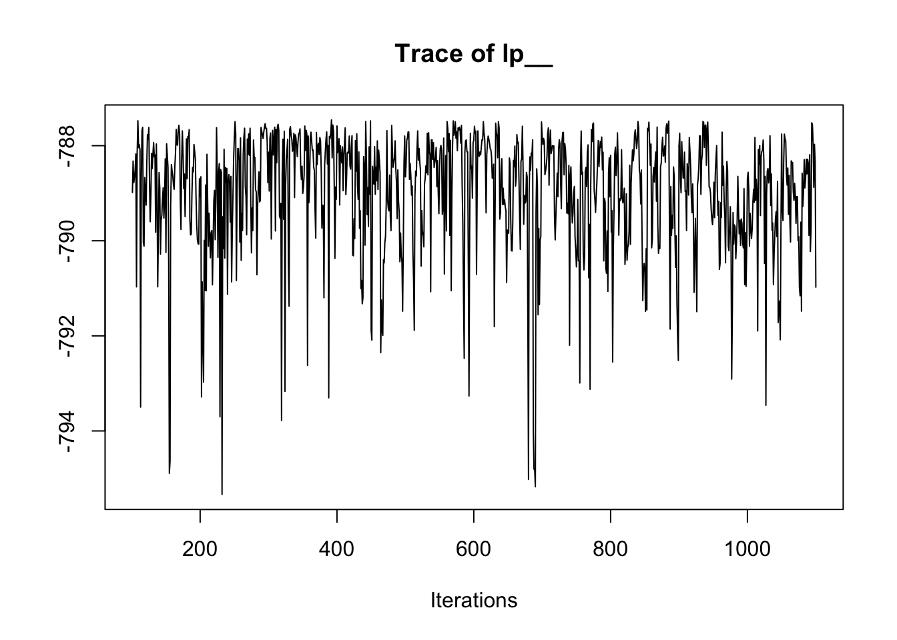
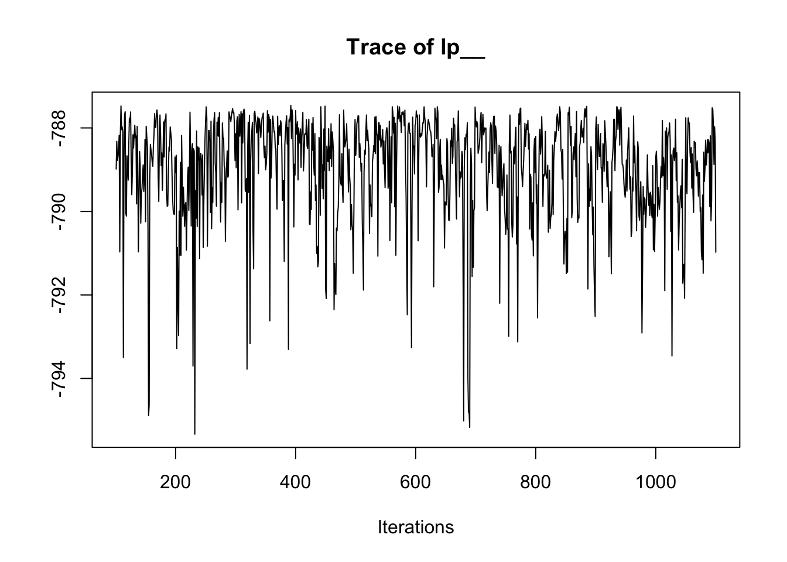
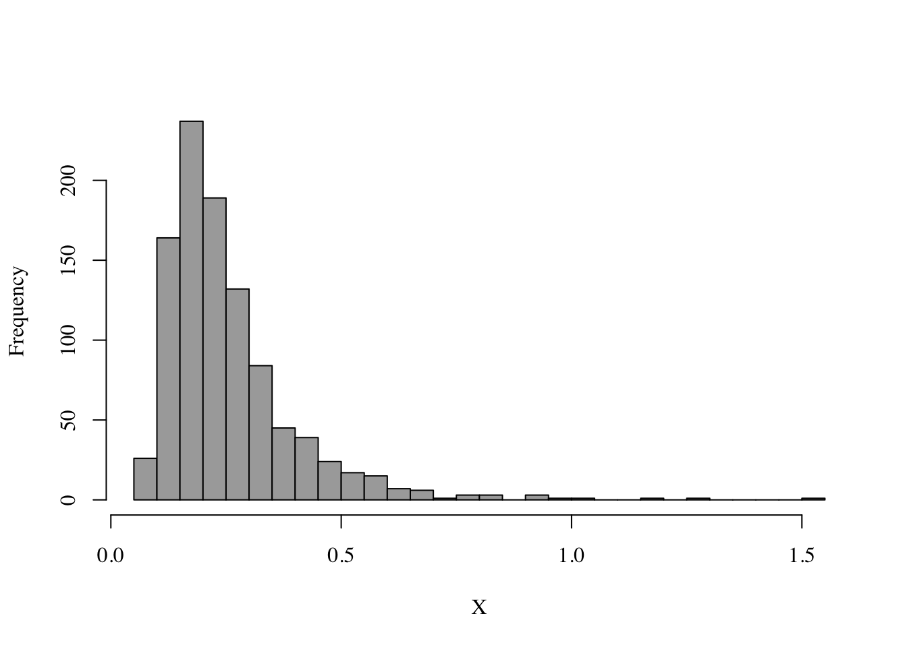
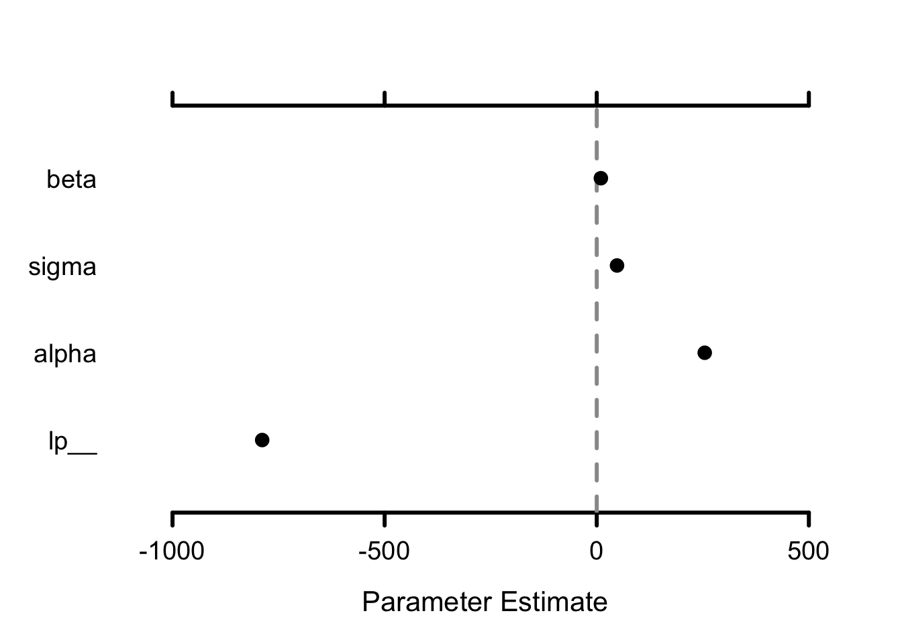
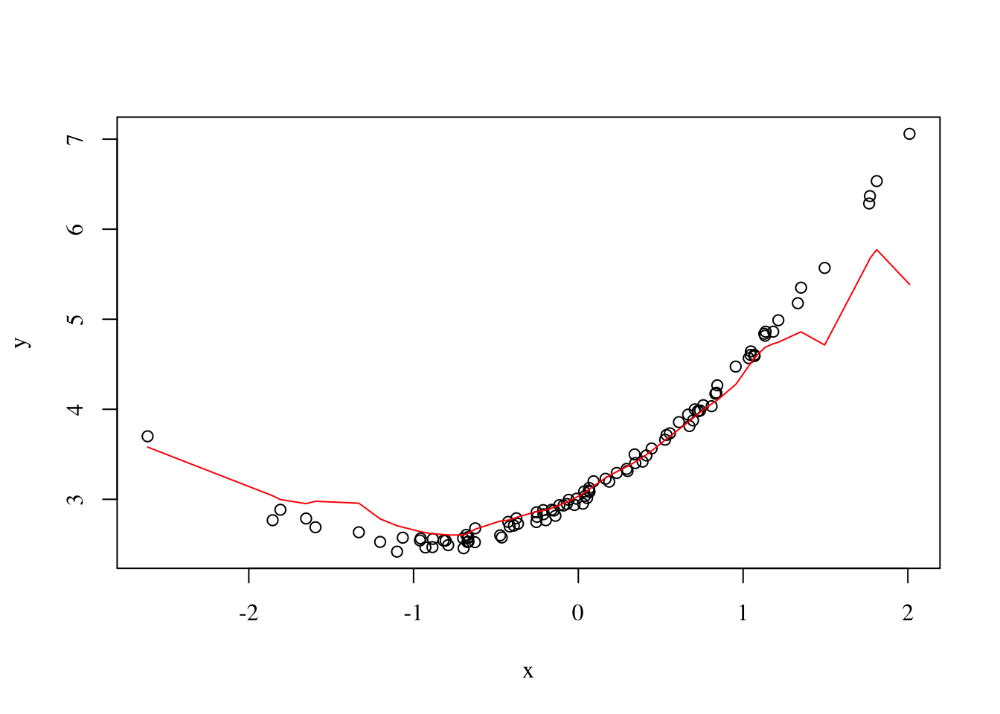

5 Data analysis and statistical modeling
The following few sections introduce packages I frequently use for data analysis, modelling and machine learning.
5.1 Stan
Stan is a great package for Bayesian modelling and inference. Compared to statistical packages that are fit to one model, such as glmnet or lme4, Stan allows to easily define custom Bayesian models for which posterior distributions are automatically inferred using HMC.
A simple liner regression model could look like this:
library(rstan)
library(lme4)
model <- "
data {
int<lower=1> n;
vector[n] x;
vector[n] y;
}
parameters {
real beta;
real<lower=0> sigma;
real alpha;
}
model {
beta ~ normal(0, 5);
sigma ~ cauchy(0, 5);
y ~ normal(alpha + x * beta, sigma);
}
"
n <- nrow(sleepstudy)
x <- sleepstudy$Days
y <- sleepstudy$Reaction
fit <- stan(model_code = model, data = list(n = n, x = x, y = y), warmup = 100,
iter = 1100, chains = 1)
SAMPLING FOR MODEL '920bbd45e873f3162b84171e9f3ae19f' NOW (CHAIN 1).
Chain 1:
Chain 1: Gradient evaluation took 2.6e-05 seconds
Chain 1: 1000 transitions using 10 leapfrog steps per transition would take 0.26 seconds.
Chain 1: Adjust your expectations accordingly!
Chain 1:
Chain 1:
Chain 1: WARNING: There aren't enough warmup iterations to fit the
Chain 1: three stages of adaptation as currently configured.
Chain 1: Reducing each adaptation stage to 15%/75%/10% of
Chain 1: the given number of warmup iterations:
Chain 1: init_buffer = 15
Chain 1: adapt_window = 75
Chain 1: term_buffer = 10
Chain 1:
Chain 1: Iteration: 1 / 1100 [ 0%] (Warmup)
Chain 1: Iteration: 101 / 1100 [ 9%] (Sampling)
Chain 1: Iteration: 210 / 1100 [ 19%] (Sampling)
Chain 1: Iteration: 320 / 1100 [ 29%] (Sampling)
Chain 1: Iteration: 430 / 1100 [ 39%] (Sampling)
Chain 1: Iteration: 540 / 1100 [ 49%] (Sampling)
Chain 1: Iteration: 650 / 1100 [ 59%] (Sampling)
Chain 1: Iteration: 760 / 1100 [ 69%] (Sampling)
Chain 1: Iteration: 870 / 1100 [ 79%] (Sampling)
Chain 1: Iteration: 980 / 1100 [ 89%] (Sampling)
Chain 1: Iteration: 1090 / 1100 [ 99%] (Sampling)
Chain 1: Iteration: 1100 / 1100 [100%] (Sampling)
Chain 1:
Chain 1: Elapsed Time: 0.058223 seconds (Warm-up)
Chain 1: 0.862701 seconds (Sampling)
Chain 1: 0.920924 seconds (Total)
Chain 1: summary(fit)$summary
mean se_mean sd 2.5% 25% 50%
beta 9.734508 0.10430790 1.307173 7.374048 8.84992 9.669498
sigma 47.782422 0.08083895 2.579821 43.259332 45.99257 47.563146
alpha 254.916993 0.64767282 7.282857 241.316674 250.44446 254.898783
lp__ -789.154520 0.12228032 1.526152 -792.932606 -789.76729 -788.763406
75% 97.5% n_eff Rhat
beta 10.55408 12.47037 157.0477 1.024087
sigma 49.38598 53.29628 1018.4457 1.000171
alpha 260.02287 268.50520 126.4422 1.023848
lp__ -788.10495 -787.54819 155.7695 1.008462
$c_summary
, , chains = chain:1
stats
parameter mean sd 2.5% 25% 50%
beta 9.734508 1.307173 7.374048 8.84992 9.669498
sigma 47.782422 2.579821 43.259332 45.99257 47.563146
alpha 254.916993 7.282857 241.316674 250.44446 254.898783
lp__ -789.154520 1.526152 -792.932606 -789.76729 -788.763406
stats
parameter 75% 97.5%
beta 10.55408 12.47037
sigma 49.38598 53.29628
alpha 260.02287 268.50520
lp__ -788.10495 -787.548195.1.1 Rstanarm
rstanarm is a package for applied Bayesian modelling that wraps around Stan for easier usage.
library(rstanarm)
fit.arm <- rstanarm::stan_glm(Reaction ~ Days, sleepstudy, chains = 1, iter = 1100,
warmup = 100, family = gaussian())
SAMPLING FOR MODEL 'continuous' NOW (CHAIN 1).
Chain 1:
Chain 1: Gradient evaluation took 3.5e-05 seconds
Chain 1: 1000 transitions using 10 leapfrog steps per transition would take 0.35 seconds.
Chain 1: Adjust your expectations accordingly!
Chain 1:
Chain 1:
Chain 1: WARNING: There aren't enough warmup iterations to fit the
Chain 1: three stages of adaptation as currently configured.
Chain 1: Reducing each adaptation stage to 15%/75%/10% of
Chain 1: the given number of warmup iterations:
Chain 1: init_buffer = 15
Chain 1: adapt_window = 75
Chain 1: term_buffer = 10
Chain 1:
Chain 1: Iteration: 1 / 1100 [ 0%] (Warmup)
Chain 1: Iteration: 101 / 1100 [ 9%] (Sampling)
Chain 1: Iteration: 210 / 1100 [ 19%] (Sampling)
Chain 1: Iteration: 320 / 1100 [ 29%] (Sampling)
Chain 1: Iteration: 430 / 1100 [ 39%] (Sampling)
Chain 1: Iteration: 540 / 1100 [ 49%] (Sampling)
Chain 1: Iteration: 650 / 1100 [ 59%] (Sampling)
Chain 1: Iteration: 760 / 1100 [ 69%] (Sampling)
Chain 1: Iteration: 870 / 1100 [ 79%] (Sampling)
Chain 1: Iteration: 980 / 1100 [ 89%] (Sampling)
Chain 1: Iteration: 1090 / 1100 [ 99%] (Sampling)
Chain 1: Iteration: 1100 / 1100 [100%] (Sampling)
Chain 1:
Chain 1: Elapsed Time: 0.055629 seconds (Warm-up)
Chain 1: 0.510607 seconds (Sampling)
Chain 1: 0.566236 seconds (Total)
Chain 1: summary(fit.arm)
Model Info:
function: stan_glm
family: gaussian [identity]
formula: Reaction ~ Days
algorithm: sampling
priors: see help('prior_summary')
sample: 1000 (posterior sample size)
observations: 180
predictors: 2
Estimates:
mean sd 2.5% 25% 50% 75% 97.5%
(Intercept) 247.5 17.4 186.7 245.8 251.1 256.1 264.5
Days 10.4 1.4 7.6 9.6 10.5 11.3 13.2
sigma 49.9 8.6 42.8 46.2 48.0 49.9 78.6
mean_PPD 294.2 16.3 236.3 294.3 297.9 301.4 307.6
log-posterior -967.0 22.7 -1052.3 -961.9 -960.8 -960.2 -959.6
Diagnostics:
mcse Rhat n_eff
(Intercept) 4.2 1.1 17
Days 0.1 1.0 723
sigma 2.0 1.1 18
mean_PPD 4.1 1.1 16
log-posterior 5.9 1.1 15
For each parameter, mcse is Monte Carlo standard error, n_eff is a crude measure of effective sample size, and Rhat is the potential scale reduction factor on split chains (at convergence Rhat=1).5.1.2 brms
For non-linear multi-level models brms is also a great option.
library(brms)
fit.multilevel <- brm(Reaction ~ Days + (Days | Subject), sleepstudy, chains = 1,
iter = 1000)
SAMPLING FOR MODEL '45335b867c1a5a0373bc06c1740c990e' NOW (CHAIN 1).
Chain 1:
Chain 1: Gradient evaluation took 5.1e-05 seconds
Chain 1: 1000 transitions using 10 leapfrog steps per transition would take 0.51 seconds.
Chain 1: Adjust your expectations accordingly!
Chain 1:
Chain 1:
Chain 1: Iteration: 1 / 1000 [ 0%] (Warmup)
Chain 1: Iteration: 100 / 1000 [ 10%] (Warmup)
Chain 1: Iteration: 200 / 1000 [ 20%] (Warmup)
Chain 1: Iteration: 300 / 1000 [ 30%] (Warmup)
Chain 1: Iteration: 400 / 1000 [ 40%] (Warmup)
Chain 1: Iteration: 500 / 1000 [ 50%] (Warmup)
Chain 1: Iteration: 501 / 1000 [ 50%] (Sampling)
Chain 1: Iteration: 600 / 1000 [ 60%] (Sampling)
Chain 1: Iteration: 700 / 1000 [ 70%] (Sampling)
Chain 1: Iteration: 800 / 1000 [ 80%] (Sampling)
Chain 1: Iteration: 900 / 1000 [ 90%] (Sampling)
Chain 1: Iteration: 1000 / 1000 [100%] (Sampling)
Chain 1:
Chain 1: Elapsed Time: 2.43316 seconds (Warm-up)
Chain 1: 0.690034 seconds (Sampling)
Chain 1: 3.1232 seconds (Total)
Chain 1: summary(fit.multilevel) Family: gaussian
Links: mu = identity; sigma = identity
Formula: Reaction ~ Days + (Days | Subject)
Data: sleepstudy (Number of observations: 180)
Samples: 1 chains, each with iter = 1000; warmup = 500; thin = 1;
total post-warmup samples = 500
Group-Level Effects:
~Subject (Number of levels: 18)
Estimate Est.Error l-95% CI u-95% CI Eff.Sample Rhat
sd(Intercept) 26.27 7.17 14.76 42.46 195 1.01
sd(Days) 6.43 1.42 4.13 9.52 126 1.00
cor(Intercept,Days) 0.08 0.29 -0.40 0.69 157 1.00
Population-Level Effects:
Estimate Est.Error l-95% CI u-95% CI Eff.Sample Rhat
Intercept 251.95 7.40 239.74 266.92 266 1.00
Days 10.29 1.80 6.83 14.27 173 1.01
Family Specific Parameters:
Estimate Est.Error l-95% CI u-95% CI Eff.Sample Rhat
sigma 26.05 1.61 23.31 29.44 252 1.00
Samples were drawn using sampling(NUTS). For each parameter, Eff.Sample
is a crude measure of effective sample size, and Rhat is the potential
scale reduction factor on split chains (at convergence, Rhat = 1).5.1.3 bayesplot
For plotting of Bayesian models inferred using the tools mentioned above, you probably want to use bayesplot. For instance, to compare posterior predictive intervals between the rstanarm linear model and the mixed model form brms:
library(bayesplot)
library(cowplot)
p1 <- ppc_intervals(y = sleepstudy$Reaction, yrep = posterior_predict(fit.arm)) +
labs(title = "Linear model")
p2 <- ppc_intervals(y = sleepstudy$Reaction, yrep = posterior_predict(fit.multilevel)) +
labs(title = "Linear mixed model")
cowplot::plot_grid(p1, p2, ncol = 2, align = "h")
5.2 greta
Model definitions in Stan are arguable difficult in the beginning. As an alternative with greta is not only easier to compose models, but also often faster owing to the fact that it’s developed against tensorflow. Installation can be a bit tedious. For greta version v.0.3 I would install tensorflow from the command line:
conda create -y -n r-tensorflow python=3.6
conda install tensorflow==1.10.0
pip install tensorflow-probability==0.30.0The same model we used for stan above, looks like this with greta:
library(greta)
library(lme4)
n <- nrow(sleepstudy)
x <- sleepstudy$Days
y <- sleepstudy$Reaction
alpha <- variable()
beta <- greta::normal(0, 5)
sigma <- greta::cauchy(0, 5, truncation = c(0, Inf))
y <- greta::as_data(y)
greta::distribution(y) <- greta::normal(alpha + x * beta, sigma)
mod <- greta::model(beta)
samples <- greta::mcmc(mod, n_samples = 1000, warmup = 100, chains = 1)5.3 MCMC
There are a couple of packages on CRAN especially for Markov Chain Monte Carlo and Bayesian methods, some of which are mentioned below.
coda is a package for analysis and diagnostics of MCMC chains. Mostly it takes arguments of class mcmc.list, so put your results into an object of it to be able to use coda:
library(coda)
coda::autocorr(As.mcmc.list(fit))[[1]]
, , beta
beta sigma alpha lp__
Lag 0 1.00000000 -0.09098018 -0.84679910 0.02323685
Lag 1 0.64649460 -0.05659510 -0.65854924 -0.02781911
Lag 5 0.19644228 -0.04945911 -0.24252697 -0.01379953
Lag 10 0.04554359 -0.03235870 -0.09980014 0.05001408
Lag 50 0.04263937 0.04612791 -0.04150179 0.01005839
, , sigma
beta sigma alpha lp__
Lag 0 -0.09098018 1.00000000 0.064407207 -0.16797674
Lag 1 -0.03181738 -0.09358071 0.042213847 -0.07805589
Lag 5 -0.02528513 0.02386571 0.023106123 -0.07835147
Lag 10 0.02170223 -0.01175329 -0.001123165 -0.04344650
Lag 50 0.04590280 -0.07346226 -0.029463816 -0.02172717
, , alpha
beta sigma alpha lp__
Lag 0 -0.846799096 0.06440721 1.000000000 -0.03091263
Lag 1 -0.644357194 0.05412907 0.758570269 0.01090853
Lag 5 -0.253959966 0.06250224 0.288738733 0.03339915
Lag 10 -0.001105280 0.01588829 0.072123141 -0.04399030
Lag 50 0.007197419 -0.05324803 -0.008289024 -0.01622294
, , lp__
beta sigma alpha lp__
Lag 0 0.023236851 -0.167976737 -0.030912631 1.00000000
Lag 1 0.003303205 -0.074906248 0.003060961 0.59562131
Lag 5 -0.013921540 0.021347125 0.022159315 0.22428970
Lag 10 -0.036899347 0.053249233 0.058175966 0.10776711
Lag 50 -0.052465458 0.009090258 0.050878108 0.04968255coda::traceplot(As.mcmc.list(fit)) 

MCMCpack offer an alternative to rstanarm for applied Bayesian modelling. It also comes with a set of useful distributions used frequently in Bayesian modelling, such as the Dirichlet, inverse gamma, etc.
library(MCMCpack)
invg <- MCMCpack::rinvgamma(1000, 5, 1)
hist(invg, breaks = 50, xlab = "X", main = "", col = "darkgrey", family = "serif")
For plotting mcmc.list objects (from coda) MCMCvis is great:
MCMCvis::MCMCplot(As.mcmc.list(fit))
5.4 mlR and openML
CRAN offers dozens of packages related to machine and statistical learning, many of which doing the same. mlR wraps many of these into one big library. mlR integrates with openML, an open machine learning platform where people share code, data and algorithms. Here we show an example where we use a Gaussian process to predict the Kyphosis label from the gam package.
library(mlr)
task <- mlr::makeClassifTask(data = kyphosis, target = "Kyphosis")
lrn <- mlr::makeLearner("classif.gausspr")
n <- nrow(kyphosis)
train.set <- sample(n, size = 2/3 * n)
test.set <- setdiff(1:n, train.set)
model <- mlr::train(lrn, task, subset = train.set)Using automatic sigma estimation (sigest) for RBF or laplace kernel pred <- stats::predict(model, task = task, subset = test.set)
performance(pred, measures = list(mmce, acc)) mmce acc
0.1111111 0.8888889 5.5 Tensorflow
Thanks to Rstudio, R users are able to use tensorflow, a library for high performance numerical computations (which for instance greta uses). For instance, a linear model could look like this:
library(tensorflow)
n <- nrow(sleepstudy)
x <- sleepstudy$Days
y <- sleepstudy$Reaction
# define model
beta <- tf$Variable(tf$random_normal(shape(1L), 0, 10))
alpha <- tf$Variable(tf$zeros(shape(1L)))
y.hat <- alpha + beta * x
# Minimize the mean squared errors.
loss <- tf$reduce_mean((y - y.hat)^2)
optimizer <- tf$train$GradientDescentOptimizer(0.5)
train <- optimizer$minimize(loss)
# Launch the graph and initialize the variables.
sess <- tf$Session()
sess$run(tf$global_variables_initializer())
for (step in 1:100) {
sess$run(train)
}5.6 Keras
Keras is an interface to popular numerical libraries such as tensorflow and theano for which model/network definitions are independent of the library on the backend. Our tensorflow model from above would look the following in keras:
library(keras)
model <- keras_model_sequential() %>% layer_dense(units = 1, activation = "linear",
input_shape = 1)
model %>% compile(loss = "mse", optimizer = optimizer_sgd(0.5), metrics = list("mean_absolute_error"))5.7 Statistical learning
Some packages for regression:
glmnetfor \(\ell_1\)- and \(\ell_2\)-penalized linear regression models,lme4for frequentist mixed models,mgcvfor generalized additive models,netRegfor graph regularized linear models,xgboostandgbmfor boosting.h20for general machine learning algorithms,
TODO some examples
5.8 Big data analytics
For Big data analytics I recommend Rstudio’s sparklyr since it nicelt itegrates with the other methods from the tidyverse. For instance, following an example from Rstudio’s tutorials:
library(sparklyr)
sc <- spark_connect(master = "local")
kmeans_model <- copy_to(sc, iris, "iris", overwrite = TRUE) %>% select(Petal_Width,
Petal_Length) %>% ml_kmeans(centers = 3)5.9 Others
Some other great packages for various data-related things:
5.9.1 modelr
modelr defines multiple helper functions related to statistical modelling:
library(modelr)
sleepstudy %>% modelr::fit_with(lm, modelr::formulas(~Reaction, no_intercept = ~0 +
Days, intercept = ~1 + Days))$no_intercept
Call:
.f(formula = Reaction ~ 0 + Days, data = data)
Coefficients:
Days
50.16
$intercept
Call:
.f(formula = Reaction ~ 1 + Days, data = data)
Coefficients:
(Intercept) Days
251.41 10.47 5.9.2 kernlab
Use kernlab for tasks related to kernels, such as Gaussian process regression or merely computing a Gram-matrix.
library(kernlab)
x <- matrix(rnorm(25), 5)
rbf <- kernlab::rbfdot()
(K <- kernlab::kernelMatrix(rbf, x))An object of class "kernelMatrix"
[,1] [,2] [,3] [,4] [,5]
[1,] 1.000000e+00 2.538052e-04 3.908063e-08 7.738091e-04 1.235612e-04
[2,] 2.538052e-04 1.000000e+00 2.785052e-10 1.300262e-07 8.685670e-02
[3,] 3.908063e-08 2.785052e-10 1.000000e+00 4.426158e-16 1.270126e-14
[4,] 7.738091e-04 1.300262e-07 4.426158e-16 1.000000e+00 2.306205e-07
[5,] 1.235612e-04 8.685670e-02 1.270126e-14 2.306205e-07 1.000000e+00x <- sort(rnorm(100))
y <- 3 + 0.5 * x^2 + 1 * x + rnorm(100, 0, 0.05)
gpr <- kernlab::gausspr(x, y)Using automatic sigma estimation (sigest) for RBF or laplace kernel plot(x, y, family = "serif")
lines(x, predict(gpr, x), col = "red")